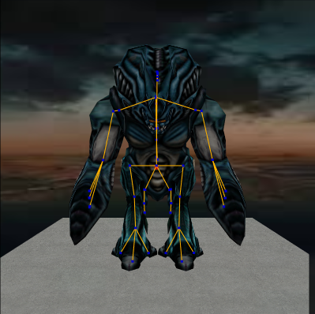
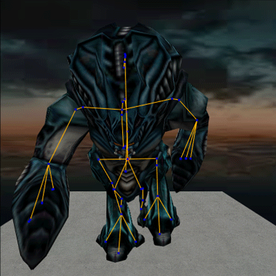

What is within an SMD file?
We will be using the "garg_template_biped1.smd" file, As shown below:
there are two types of SMD'S (Usually referred as a MESH):
MESH
The physical object that is shown in the game, uses .BMP image files as textures, and is declared in the QC as $Body.
RIG
The rig is responsible not only for handling animations but (at least in blender) also uses vertex groups to help define the area's that each bone controls.
click/tap the image below to show or hide the mesh

In the example above The model's are the same, the only difference is the model is hidden in one, this represents how the rig is the MAIN contributer for animations. Now the way the SMD files are created (either from blender, GMAX, MAYA, or some other compatible model editor), DO matter. When you are animating a model, the only thing that should be exported is the Rig (skeleton data), while the physical model is untouched (unless told otherwise from the editor).
Mesh SMD file breakdown
I will be using garg_template_biped.smd (the body mesh for the Gargantua monster in Half-life)
PLEASE KEEP IN MIND THE SMD TRANSCRIPT BELOW IS NOT MINE IT IS OWNED BY VALVE, I ENCOURAGE YOU TO BUY THE GAME AND DECOMPILE THESE MODELS YOURSELF.
The first thing that is read is the bones:
0 "Bip01" -1 1 "Bip01 Pelvis" 0 2 "Bip01 L Leg" 1 3 "Bip01 L Leg1" 2 4 "Bip01 L Foot" 3 5 "Bip01 L Toe0" 4 6 "Bip01 L Toe1" 4 7 "Bip01 L Toe2" 4 8 "Bip01 R Leg" 1 9 "Bip01 R Leg1" 8 10 "Bip01 R Foot" 9 11 "Bip01 R Toe0" 10 12 "Bip01 R Toe1" 10 13 "Bip01 R Toe2" 10 14 "Bip01 Spine" 1 15 "Bip01 Spine1" 14 16 "Bip01 Spine2" 15 17 "Bip01 Spine3" 16 18 "Bip01 Spine4" 17 19 "Bip01 Neck" 18 20 "Bip01 Head" 19 21 "Dummy03" 20 22 "Bone07" 21 23 "Bip01 L Arm" 19 24 "Bip01 L Arm1" 23 25 "Bip01 L Arm2" 24 26 "Dummy08" 25 27 "Bone36" 26 28 "Dummy09" 25 29 "Bone26" 28 30 "Dummy15" 25 31 "Bone23" 30 32 "Bip01 R Arm" 19 33 "Bip01 R Arm1" 32 34 "Bip01 R Arm2" 33 35 "Dummy07" 34 36 "Bone32" 35 37 "Bone33" 36 38 "Dummy14" 34 39 "Bone20" 38 40 "Dummy10" 34 41 "Bone29" 40 42 "Dummy19" 15 43 "Bone39" 42 44 "Dummy05" 1 45 "Bone15" 44 46 "Bone16" 45 47 "Bone17" 46 48 "Dummy04" 1 49 "Bone10" 48 50 "Bone11" 49 51 "Bone12" 50 52 "Dummy02" 1 53 "Bone01" 52 54 "Bone02" 53 55 "Bone03" 54 56 "Bone04" 55
there are three important parts for the bone list
-
bone hierarchy: The number at the beginning states the position of the bone in a parent-child list
on the first line we can tell that the bone is listed at 0, this will state it as the root (but techincally isn't which I'll explain) - bone name: The name of the bone; this is self explanatory, but to give a finer description, gives this bone a name.
-
# of parent bone: lets the interpreter/studioMDL know the parent of this bone, this is where that techincality comes in.
If you look at the first line you'll notice that the bone called "Bip01" is parented to a bone listed as -1, but there is no bone for this.
thats because When valve developed the gold source engine they made each bone NEED a parent bone, so every model has an invisible bone referred to as "ROOT", this can't be changed and I would reccommend that you don't try, modifying the reference mesh with a text editor can be volatile to your SMD file.
The next section of an SMD file is the reference frame for rig, refer to the following example:
time 0
0 -1.121646 3.160127 98.556877 0.000000 0.139556 -1.570795
1 -0.277907 0.000000 1.978418 -1.570795 -1.570796 0.000000
2 -0.000045 0.000045 30.106951 0.030470 0.038266 -2.741584
3 45.067032 0.000000 0.000000 0.000000 0.000000 -0.771016
4 37.019344 -0.000001 0.000000 3.135095 -0.048475 0.232192
5 25.403790 10.611765 -16.050877 -1.570796 1.570024 0.000000
6 24.861450 34.869259 0.000001 0.000000 0.000000 1.570796
7 25.574055 10.573103 16.050816 1.570796 -1.570106 0.000000
8 0.000039 -0.000038 -30.106951 -0.021024 -0.063440 -2.743649
9 45.067032 0.000003 0.000001 0.000000 0.000000 -0.765200
10 37.019352 -0.000002 0.000000 3.127169 0.065257 0.227897
11 25.574055 10.573102 16.050816 1.570796 -1.570024 0.000000
12 24.861450 34.869259 0.000001 0.000000 0.000000 1.570796
13 25.574055 10.573102 -16.050877 -1.570796 1.570024 0.000000
14 9.204878 -3.523623 0.000019 -0.000005 -0.000001 0.026963
15 19.817598 -0.017402 0.000000 0.000000 -0.000001 0.174444
16 22.201126 -0.015305 0.000000 -0.000001 -0.000002 0.523333
17 22.202560 -0.014404 0.000000 -0.000001 -0.000002 0.619278
18 22.196165 -0.009340 0.000000 0.000000 -0.000001 0.392500
19 12.681315 -0.005768 0.000000 0.000000 0.000000 0.000000
20 7.255790 -0.000003 0.000000 0.000035 -0.000003 0.077702
21 -1.009225 27.484287 0.143183 -0.000003 -0.000002 2.758613
22 0.137549 0.410966 0.978475 0.000000 0.000000 0.000000
23 -43.911972 16.262850 42.072151 0.725522 -1.306202 2.432818
24 6.875018 0.000005 -0.000002 -1.382769 -0.431216 -1.252266
25 54.119423 -0.000001 -0.000004 0.000000 0.000000 -0.548889
26 45.547329 -0.415089 -0.052961 0.211792 0.051268 2.183250
27 -0.831111 0.138134 -0.044357 0.000000 0.000000 0.000000
28 47.660461 14.868882 -1.061253 0.211792 0.051268 2.183250
29 0.077091 -0.197588 0.012488 0.000000 0.000000 0.000000
30 44.673546 -14.145040 -0.096677 0.211792 0.051268 2.183250
31 -0.348509 -0.151028 -0.015644 0.000000 0.000000 0.000000
32 -44.498074 16.660591 -40.351204 -0.725741 1.306153 2.432606
33 6.875021 -0.000004 0.000000 1.373003 0.427893 -1.270977
34 54.119431 0.000000 -0.000003 0.000000 0.000000 -0.548889
35 45.723522 -1.580453 -1.381198 -0.194592 -0.054333 2.182341
36 0.128249 -0.403493 0.086674 0.000000 0.000000 0.000000
37 -0.000001 0.000002 -0.000003 0.000000 0.000000 0.000000
38 44.812378 -14.970496 -0.313823 -0.194592 -0.054333 2.182341
39 0.460157 -0.261736 -0.526478 0.000000 0.000000 0.000000
40 47.957424 14.396820 -1.450199 -0.194592 -0.054333 2.182341
41 0.784854 -1.145549 -0.483906 0.000000 0.000000 0.000000
42 -4.054374 54.100746 1.121917 -0.000001 0.000002 -1.911759
43 0.510548 0.168266 0.000000 0.000000 0.000000 0.000000
44 -20.652094 26.216942 13.546794 0.000002 -0.000002 -1.710352
45 0.345592 0.328704 1.416188 0.000000 0.000000 0.000000
46 -5.019465 -13.448384 0.000000 0.000000 0.000000 0.000000
47 -17.300320 -5.720575 -1.641912 0.000000 0.000000 0.000000
48 -20.692251 26.147146 -11.763863 0.000002 -0.000002 -1.710352
49 0.079523 0.174934 -0.740336 0.000000 0.000000 0.000000
50 -4.830052 -13.448384 0.000000 0.000000 0.000000 0.000000
51 -17.110905 -5.436457 1.517336 0.000000 0.000000 0.000000
52 102.135223 -0.202556 0.669153 0.000001 -0.000002 -1.710352
53 -0.533876 -1.386979 0.452617 0.000000 0.000000 0.000000
54 -4.916881 -2.709306 0.000000 0.000000 0.000000 0.000000
55 -10.636516 -6.522401 0.000000 0.000000 0.000000 0.000000
56 -10.636514 -6.923769 0.000000 0.000000 0.000000 0.000000
end